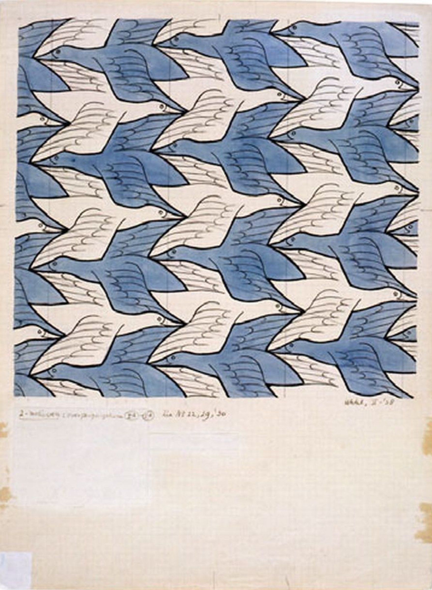
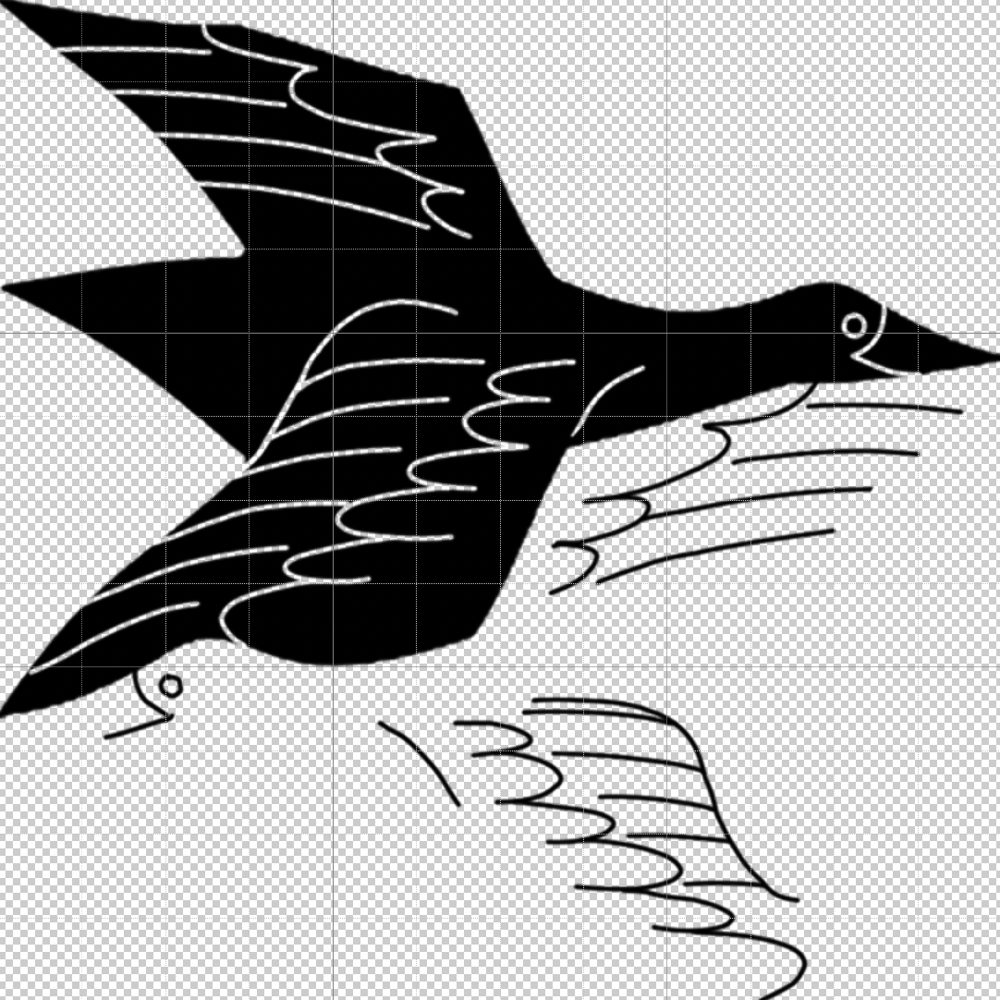
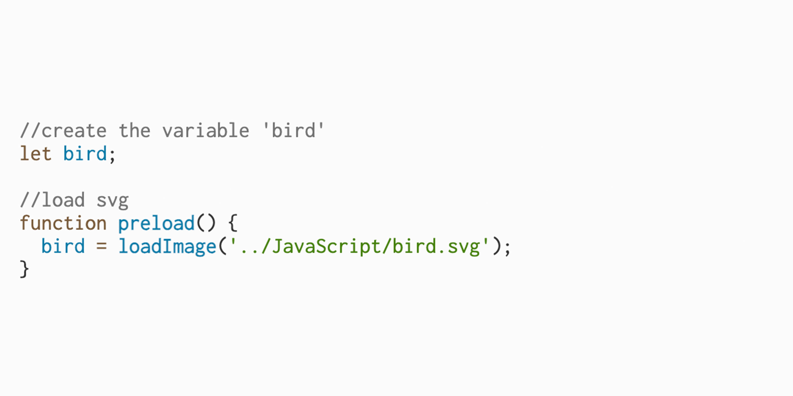
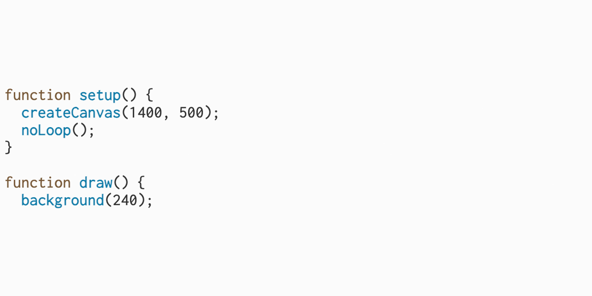
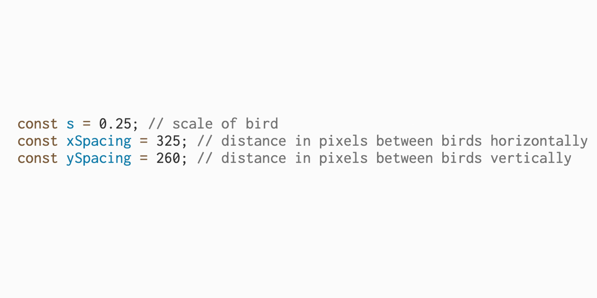
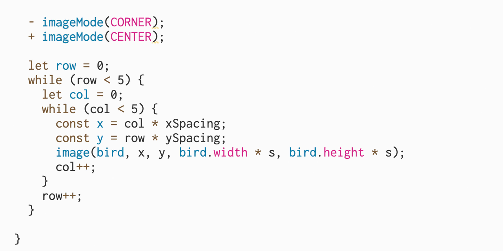

SVG Tessellation
Creating an M.C. Escher inspired work using an SVG and p5.js
Creating an M.C. Escher inspired work using an SVG and p5.js

I created a drawing in photoshop with the grid set to visible, mimicking Escher's birds. I used an online converter to turn this drawing into a SVG file for the purposes of this project.

I added the Bird SVG to the document using the Preload() function which is called to load an asset before a sketch runs. It is stored under the name ‘bird’, by which it can be called upon:
P5js.org. (2024). preload. [online] Available at: https://p5js.org/reference/p5/preload/

The size of the canvas is set in addition to the function ‘noLoop()’ so that the draw function runs only one time:

I defined the scale factor of the bird (s = 0.25), the horizontal spacing between each bird (xSpacing = 325) and the vertical spacing between each bird (ySpacing = 260). This was mostly a process of experimentation, where I would input different values until the birds tessellated properly.
developer.mozilla.org. (n.d.). const - JavaScript | MDN. [online] Available at: https://developer.mozilla.org/en-US/docs/Web/JavaScript/Reference/Statements/const

The goal was to draw copies of the bird SVG across the canvas. To do this I needed two loops, one for the rows (top to bottom), and one for the columns (left to right). Col * xSpacing determines how far across the canvas the next bird should be placed and row * ySpacing calculates how far down the canvas the next bird should be placed. These two values give the (x , y) positioning of each bird. I used ImageMode(CENTER) to place the bird at the center of the (x , y) point.
P5js.org. (2024). imageMode. [online] Available at: https://p5js.org/reference/p5/imageMode/

The birds are positioned in an arbitrary 5x5 grid where each bird is centred in its position within the grid. The result is a tessellating pattern. Were I to revisit this, I would redo the SVG design to produce a more seamless, refined outcome and consider implementing a variable which uses the Random() function where the colour of the birds would be altered when the canvas is refreshed.